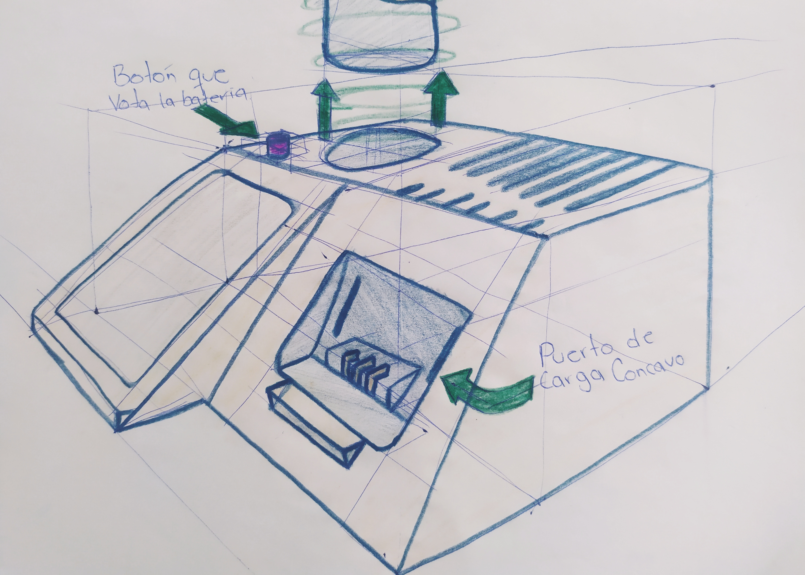

Modificación a un cargador de baterías Milwaukee
Este proyecto consistió en agregar una mejora a un producto existente, que es un cargador de baterías para taladro. La mejora consiste en la implementación de un botón en el cargador para expulsar la batería, evitando así el problema actual en el que se necesita sostener el cargador con una mano y tirar de la batería con fuerza con la otra, de manera incómoda y poco satisfactoria

_compressed_page-0001.jpg)